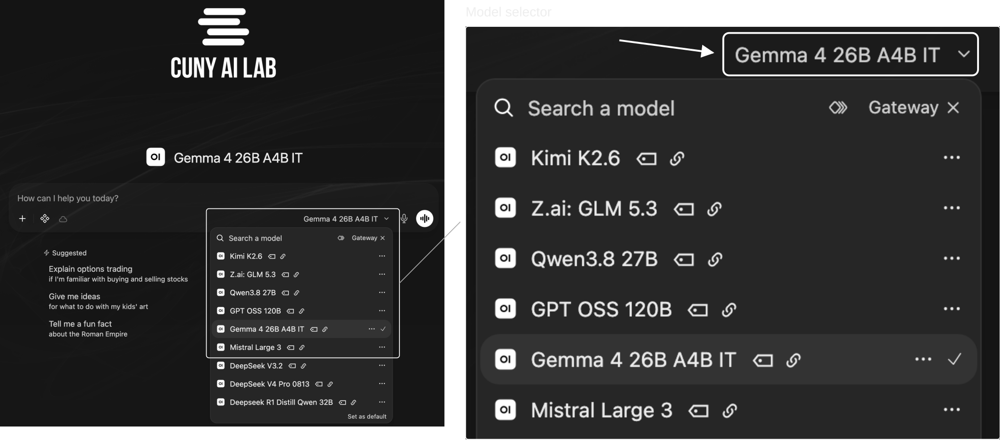
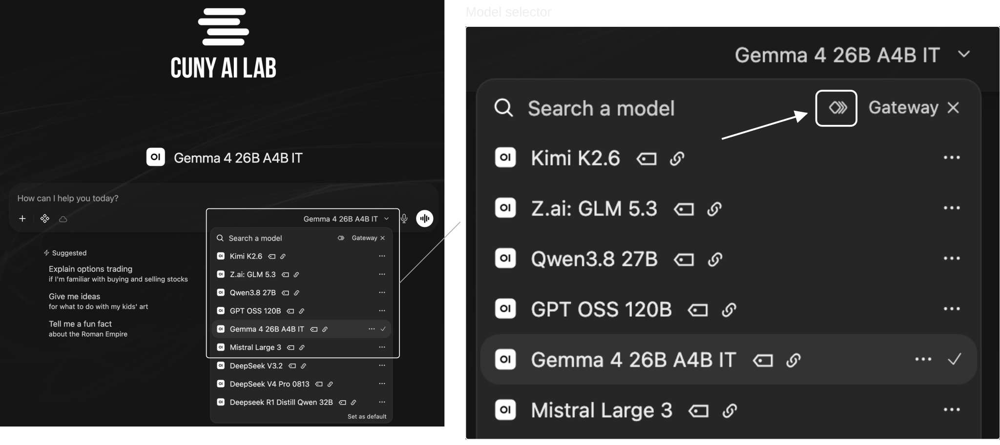
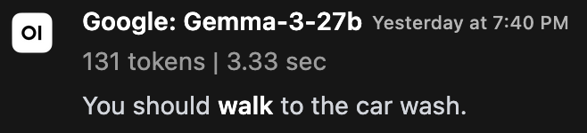
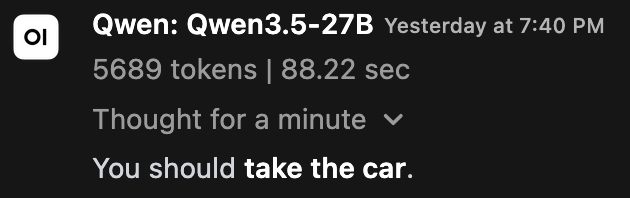
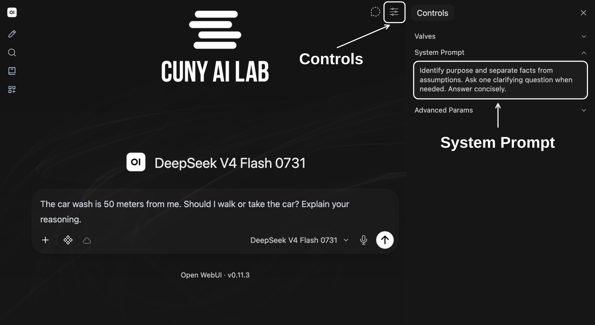
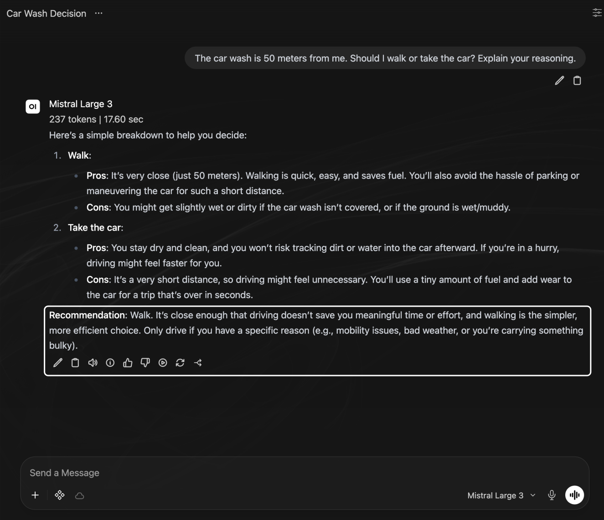
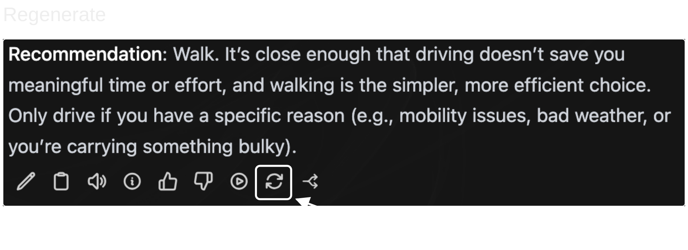
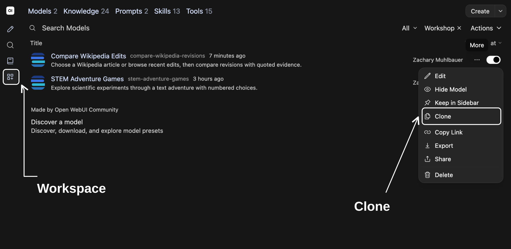
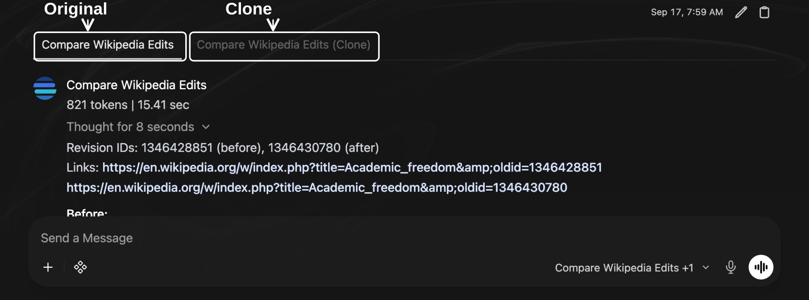
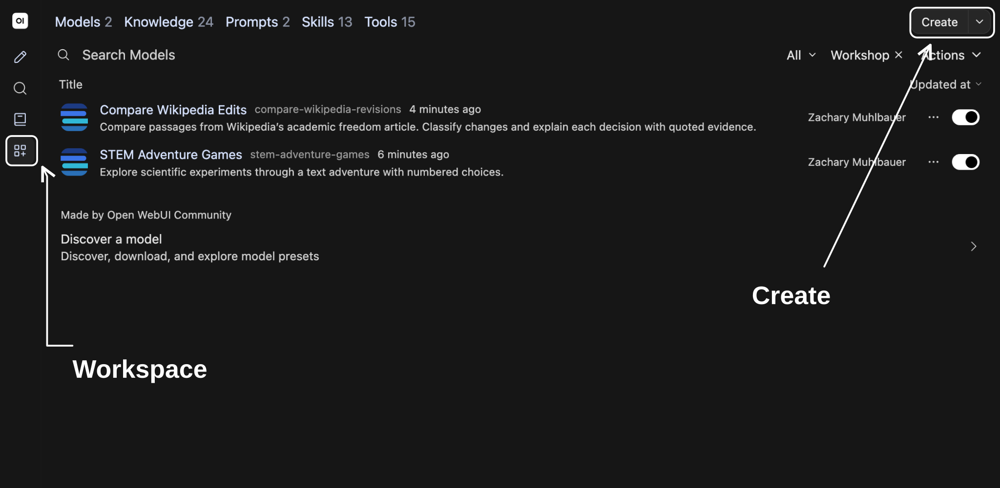

Check monthly usage at Model Access.
What is your name, pronouns, and role at CUNY?
What brings you to this workshop today?
Select Continue with CUNY Login and sign in with your CUNY account.
System prompts are setup instructions that describe how a model should behave.
Questions or tasks you enter in chat.
You create a custom model by choosing a base model, such as Gemma, and adding instructions and documents for it to use.


Compare how two small models interpret this sentence.
The nurse yelled at the doctor because she was late. Who was late?
Send this question to both models.
This challenge tests how models interpret ambiguous pronouns using context and common-sense reasoning. Changing one or two words between paired sentences changes who a pronoun refers to.
In our question, either person could be late.
Consider this question.
The car wash is 50 meters from me. Should I walk or take the car? Explain your reasoning.
What do you think this person wants to accomplish?


Start a new chat, select two models, and send this question.
The car wash is 50 meters from me. Should I walk or take the car? Explain your reasoning.

Select Controls at top right of chat. Paste these instructions into System Prompt, then close Controls.
Identify purpose and separate facts from assumptions. Ask one clarifying question when needed. Answer concisely.


Choose one example and experiment with it in chat.
Research
Paste one pair from sample revisions. Ask it to classify one change and quote evidence.
Save your opening request to use again.
Review Base Model and System Prompt for your chosen example.
Find Purpose, Procedure, Constraints, and Format in its instructions.
Which instruction explains something you noticed in its response?


Send your saved request to both models. Include source passages if you chose research. Select each model name to review its response.
What changed? Did your revised instruction work?
Save your request and both responses.
Save your prompt, model settings, and responses.
| Configuration | Custom model name, base model, system prompt, settings, and date. |
|---|---|
| Test | User request, enabled features, saved response. |
| Judgment | What you checked, evidence from each response, and any change you plan to test. |
Use materials you are permitted to upload and share. Sandbox chats may be stored and accessible to administrators or people you share them with.
Use remaining time to begin drafting instructions for your own teaching or research task.
Purpose What should your model help you accomplish? Procedure What steps should it follow? Constraints What limits should it observe? Format How should it present responses?

Keep your draft and choose source documents for your next workshop.
CUNY AI Lab · CAIL Sandbox · System Prompts · Custom Models · Winograd Schema Challenge (2012)